<!DOCTYPE html>
<html class="writer-html5" lang="en" >

<head>
  <meta charset="utf-8" />
  
  <meta name="viewport" content="width=device-width, initial-scale=1.0" />
  
  <title>Welcome to MicEMD’s documentation! &mdash; MicEMD  documentation</title>
  

  
  <link rel="stylesheet" href="_static/css/theme.css" type="text/css" />
  <link rel="stylesheet" href="_static/pygments.css" type="text/css" />
  <link rel="stylesheet" href="_static/pygments.css" type="text/css" />
  <link rel="stylesheet" href="_static/css/theme.css" type="text/css" />

  
  

  
  

  

  
  <!--[if lt IE 9]>
    <script src="_static/js/html5shiv.min.js"></script>
  <![endif]-->
  
    
      <script type="text/javascript" id="documentation_options" data-url_root="./" src="_static/documentation_options.js"></script>
        <script data-url_root="./" id="documentation_options" src="_static/documentation_options.js"></script>
        <script src="_static/jquery.js"></script>
        <script src="_static/underscore.js"></script>
        <script src="_static/doctools.js"></script>
    
    <script type="text/javascript" src="_static/js/theme.js"></script>

    
    <link rel="index" title="Index" href="genindex.html" />
    <link rel="search" title="Search" href="search.html" /> 
</head>

<body class="wy-body-for-nav">

   
  <div class="wy-grid-for-nav">
    
    <nav data-toggle="wy-nav-shift" class="wy-nav-side">
      <div class="wy-side-scroll">
        <div class="wy-side-nav-search" >
          

          
            <a href="#" class="icon icon-home"> MicEMD
          

          
          </a>

          
            
            
          

          
<div role="search">
  <form id="rtd-search-form" class="wy-form" action="search.html" method="get">
    <input type="text" name="q" placeholder="Search docs" />
    <input type="hidden" name="check_keywords" value="yes" />
    <input type="hidden" name="area" value="default" />
  </form>
</div>

          
        </div>

        
        <div class="wy-menu wy-menu-vertical" data-spy="affix" role="navigation" aria-label="main navigation">
          
            
            
              
            
            
              <!-- Local TOC -->
              <div class="local-toc"><ul>
<li><a class="reference internal" href="#">Welcome to MicEMD’s documentation!</a></li>
<li><a class="reference internal" href="#installation">Installation</a></li>
<li><a class="reference internal" href="#api">API</a></li>
<li><a class="reference internal" href="#Examples">Examples</a></li>
<li><a class="reference internal" href="#indices-and-tables">Indices and tables</a></li>
</ul>
</div>
            
          
        </div>
        
      </div>
    </nav>

    <section data-toggle="wy-nav-shift" class="wy-nav-content-wrap">

      
      <nav class="wy-nav-top" aria-label="top navigation">
        
          <i data-toggle="wy-nav-top" class="fa fa-bars"></i>
          <a href="#">MicEMD</a>
        
      </nav>


      <div class="wy-nav-content">
        
        <div class="rst-content">
        
          


<div role="navigation" aria-label="breadcrumbs navigation">

  <ul class="wy-breadcrumbs">
    
      <li><a href="#" class="icon icon-home"></a> &raquo;</li>
        
      <li>Welcome to MicEMD’s documentation!</li>
    
    
      <li class="wy-breadcrumbs-aside">
        
          
            <a href="_sources/index.rst.txt" rel="nofollow"> View page source</a>
          
        
      </li>
    
  </ul>

  
  <hr/>
</div>
          <div role="main" class="document" itemscope="itemscope" itemtype="http://schema.org/Article">
           <div itemprop="articleBody">
            
  <div class="section" id="welcome-to-micemd-s-documentation">
<h1>Welcome to MicEMD’s documentation!<a class="headerlink" href="#welcome-to-micemd-s-documentation" title="Permalink to this headline">¶</a></h1>
<div class="toctree-wrapper compound">
</div>
<div class="section" id="installation">
<h1>Installation<a class="headerlink" href="#installation" title="Permalink to this headline">¶</a></h1>
<textarea cols='20' rows='26'># MicEMD
Modeling, Inversion and Classification in ElectroMagnetic Detection

Prerequisite: Installing Python and Conda

Currently, MicEMD will run on Python 3.5, 3.6, 3.7 and 3.8. And MicEMD depends on some packages in Conda, so the Anaconda or Miniconda should be installed in your system.

Installing Packages

`conda install SimPEG --channel conda-forge`

`conda install pyqt`

`conda install scikit-learn=0.24.2`


Run MicEMD

Clone the github repository:

`git clone https://github.com/UndergroundDetection/MICEMD.git`

To start the GUI from source, navigate through the src directory and run mainwindow.py:

`cd MICEMD/src`

`python mainwindow.py`
</textarea>
</div>

<h2>the GUI is as follows</h2>
<p>The left of the GUI are two tabs about parameters setting: FDEM detection and TDEM detection. We demonstrate the inversion application based on the FDEM detection and demonstrate the classification application based on the TDEM detection. From top to bottom on the right of the GUI are the tab-based results display, the output of the current program, and function buttons.</p>
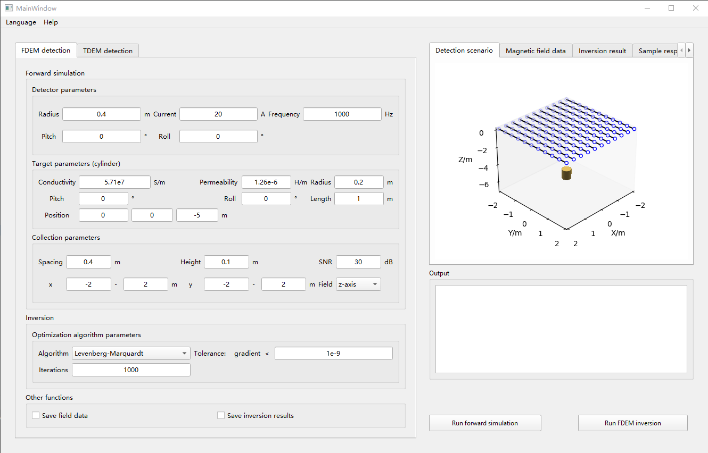
<p> <br />
<div class="section" id="api">
<h1>API<a class="headerlink" href="#api" title="Permalink to this headline">¶</a></h1>
A more exhaustive list of API methods
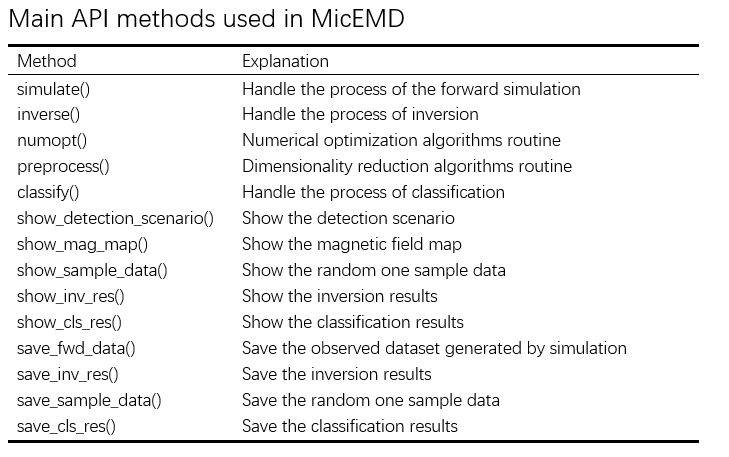
<p>For more details, visit <a class="reference internal" href="genindex.html"><span class="std std-ref">All API.</span></a></p>

</div>
<div class="section" id="Examples">
<h1>Examples<a class="headerlink" href="#Examples" title="Permalink to this headline">¶</a></h1>
<p>
The simulation can be built by following steps:<br/>
1. Firstly, create the target, detector, collection class of the forward modeling, and call the simulate interface to generate the observed data.<br/>

2. Then, for the inversion problem, set the inversion parameters and call
the inverse interface to estimate the properties of the metal target;
for the classification problem, call the preprocess interface to reduce
the dimension of the observed data and call the classify interface to
classify underground metal targets.<br/>
3. Finally, create the Handler class to analyze, show, and save the results.
</p>
<h2>Example 1: FDEM Inversion</h2>
<p>
The example is to show FDEM simulation and the inversion application. We simulated the EMI response of the metal cylinderical targets in underground environments 
based on FDEM forward modeling and used the least-squares inversion methods to estimate 
the properties of the metal target conclude the triaxial coordinate(x,y,z), triaxial polarizability(βx,βy,βz), and the orientation(pitch and roll angle) of the metal target. 
</p>
<h5>Simulation settings</h5>
Default values of the target parameters<br/>
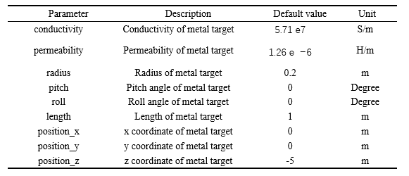<br/>
Default values of the detector parameters
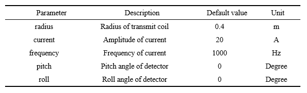<br/>
Default values of the collection parameters
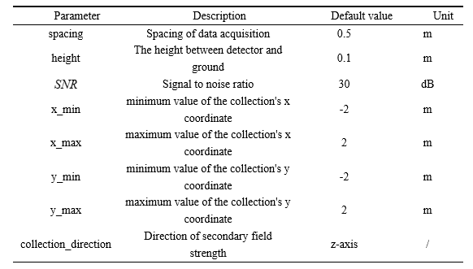

<pre>
<h5>Main code</h5>
<span>run the code by 'python article_exam1.py'</span>

<br\>
<textarea cols='20' rows='26'>
import numpy as np
import MicEMD.fdem as fdem
from MicEMD.handler import FDEMHandler


# Create and Initial the target, detector, collection class
target = fdem.Target(conductivity=5.71e7, permeability=1.26e-6, radius=0.2, pitch=0,
                     roll=0, length=1, position_x=0, position_y=0, position_z=-5)
detector = fdem.Detector(radius=0.4, current=20, frequency=1000, pitch=0, roll=0)
collection = fdem.Collection(spacing=0.5, height=0.1, SNR=30, x_min=-2, x_max=2,
                             y_min=-2, y_max=2, collection_direction='z-axis')
# call the interface of the fdem forward modeling
fwd_res = fdem.simulate(target, detector, collection, 'simpeg')


# set the inputs and parameters of the inversion
inv_inputs = (fwd_res, target, detector)
x0 = np.array([0.0, 0.0, -2, 0.0, 0.0, 0.0, 0.0, 0.0, 0.0])
inv_para = {'x0': x0, 'iterations': 10, 'tol': 1e-9}

# call the interface of the inversion
inv_res = fdem.inverse(inv_inputs, 'BFGS', inv_para)
# print(inv_res['error'], inv_res['pred'], inv_res['true'])


# create the FDEMHandler and call the methods to show and save the results
# set the FDEMHandler without parameters to save the results
# the file path of the results is generated by your settings

handler = FDEMHandler()
handler.save_fwd_data(fwd_res, 'magdata.csv')
# if you want get other axial mag_map, you can creat another collection with other
# collection_direction parameter, and input to the method show_mag_map
handler.show_mag_map(fwd_res, collection, show=True, save=True, file_name='mag_map.png')
handler.show_detection_scenario(target, collection, show=True, save=True)
handler.save_inv_res(inv_res, 'BFGS.csv')
handler.show_inv_res(inv_res, show=True, save=True, file_name='inv_res.png')

# set the FDEMHandler with parameters to save the results by default
# the file path of the results is generated according to the parameters of FDEMHandler
handler = FDEMHandler(target=target, collection=collection)
handler.save_fwd_data_default(fwd_res)
handler.show_detection_scenario_default(show=True)
handler.show_mag_map_default(fwd_res, show=True)
handler.save_inv_res_default(inv_res, 'BFGS')

</textarea></pre>
<h5>Results</h5>
you can get the forward modeling results in the file path 'MICEMD\src\results\fdemResults\forward_res':

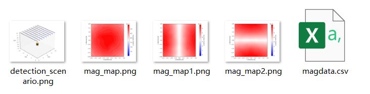
<p>
The 'magdata.csv' includes the triaxial coordinates of location of the receiver and triaxial induced magnetic field strength:<br/>
x represents the x-coordinate of the receiver location<br/>
x represents the y-coordinate of the receiver location<br/>
x represents the z-coordinate of the receiver location<br/>
hz represents the induced magnetic field strength of z-axis,<br/>
hx represents the induced magnetic field strength of x-axis, <br/>
hy represents the induced magnetic field strength of y-axis.
</p>
you can get the inversion results in the file path 'MICEMD\src\results\fdemResults\inv_res'
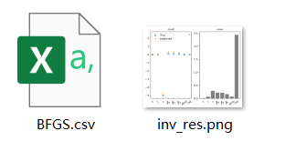<br/>
<p>
The 'BFGS.csv' includes parameters estimates, true values of parameters, and the error of estimates, and parameters estimates include the location of metal targets, the polarizability of metal targets, and the orientation of metal targets.<br/>
<br/>x,y and z represent the triaxial coordinate, <br/>
polarizability_1,polarizability_2 and polarizability_3 represent triaxial polarizability,<br/>
pitch and roll represent the orientation(pitch and roll angle) of the metal target.<br/>
</p>
<h3>Example 2: TDEM Classification</h3>
<p>
The second example is to show the TDEM forward modeling and the classification application. 
We simulate the TDEM characteristic attenuation response of metal ellipsoid targets based on the dipole model,
and we classify the material and shape using the data-based methods based on the artificial neural network classification model and PCA dimensionality reduction algorithm. 
The shape types of metal targets are divided into two categories according to the aspect ratio which can be calculated by transverse radius divided by the axial radius. 
If the aspect ratio is greater than 1, the shape is oblate, otherwise, it is prolate. 
The material types of metal targets are divided into three categories, including steel, nickel(Ni), and aluminum(Al). 
</p>
<h5>Simulation settings</h5>
Default values of the target parameters
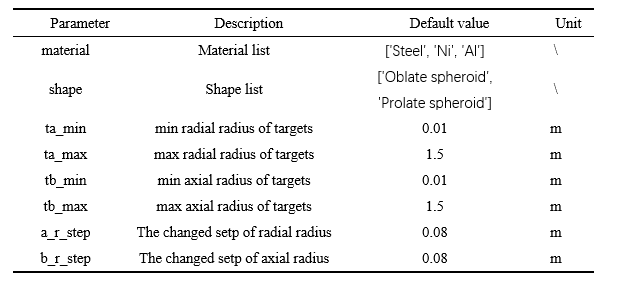<br/>
Default values of the detector parameters 
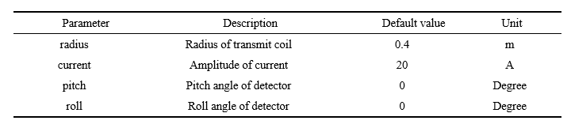<br/>
Default values of the collection parameters
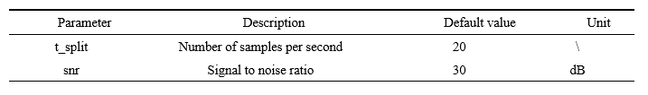<br/>
<h5>Main code</h5>
<span>run the code by 'python article_exam2.py'</span>
<pre>
<textarea cols='20' rows='26'>
import numpy as np
import MicEMD.tdem as tdem
from MicEMD.preprocessor import data_prepare
from MicEMD.handler import TDEMHandler

# the attribute of the steel, Ni, and Al conclude permeability, permeability of vacuum and conductivity
attribute = np.array([[696.3028547, 875 * 1e-6, 50000000], [99.47183638, 125 * 1e-6, 14619883.04],
                      [1.000022202, 1.256665 * 1e-6, 37667620.91]])
# create and initial the target, detector, collection class of Tdem
target = tdem.Target(material=['Steel', 'Ni', 'Al'], shape=['Oblate spheroid', 'Prolate spheroid'],
                     attribute=attribute, ta_min=0.01, ta_max=1.5, tb_min=0.01, tb_max=1.5, a_r_step=0.08,
                     b_r_step=0.08)
detector = tdem.Detector(0.4, 20, 0, 0)
collection = tdem.Collection(t_split=20, snr=30)

# call the simulate interface, the forward_result is a tuple which conclude the Sample Set and a random
# sample of Sample Set, the random sample of Sample Set is used to visualize
fwd_res = tdem.simulate(target, detector, collection, model='dipole')

# split data sets and normalization for the Sample Set, Here we classify materials
ori_dataset_material = data_prepare(fwd_res[0], task='material')


# dimensionality reduction, return a tuple conclude train_set and test_set
dim_dataset_material = tdem.preprocess(ori_dataset_material, dim_red_method='SF')


# parameters setting of the classification model by dict
para = {'solver': 'lbfgs', 'hidden_layer_sizes': (50,), 'activation': 'tanh'}

# call the classify interface
# the res of the classification which is a dict that conclude accuracy, predicted value and true value
cls_material_res = tdem.classify(ori_dataset_material, 'ANN', para)


# create the TDEMHandler and call the methods to show and save the results
# set the TDEMHandler without parameters to save the results
# the file path of the results is generated by your settings
handler = TDEMHandler()

# save the forward results and one sample data
handler.save_fwd_data(fwd_res[0], file_name='fwd_res.csv')
handler.save_sample_data(fwd_res[1], file_name='sample.csv', show=True)

# save the original dataset that distinguishes material
handler.save_fwd_data(ori_dataset_material[0], file_name='ori_material_train.csv')
handler.save_fwd_data(ori_dataset_material[1], file_name='ori_material_test.csv')

# save the final dataset after dimensionality reduction
handler.save_fwd_data(dim_dataset_material[0], file_name='dim_material_train.csv')
handler.save_fwd_data(dim_dataset_material[1], file_name='dim_material_test.csv')

# save the classification results
handler.show_cls_res(cls_material_res, ['Steel', 'Ni', 'Al'], show=True, save=True, file_name='cls_result_material.pdf')
handler.save_cls_res(cls_material_res, 'cls_material_res.csv')

# classify the shape of the targets
ori_dataset_shape = data_prepare(fwd_res[0], task='shape')
dim_dataset_shape = tdem.preprocess(ori_dataset_shape, dim_red_method='SF')
cls_shape_res = tdem.classify(dim_dataset_shape, 'ANN', para)
# save the original dataset that distinguishes material
handler.save_fwd_data(ori_dataset_shape[0], file_name='ori_material_train.csv')
handler.save_fwd_data(ori_dataset_shape[1], file_name='ori_material_test.csv')
# save the final dataset after dimensionality reduction
handler.save_fwd_data(dim_dataset_shape[0], file_name='dim_material_train.csv')
handler.save_fwd_data(dim_dataset_shape[1], file_name='dim_material_test.csv')
handler.show_cls_res(cls_shape_res, ['Oblate spheroid', 'Prolate spheroid'], show=True, save=True, file_name='cls_result_shape.pdf')
handler.save_cls_res(cls_shape_res, 'cls_shape_res.csv')
</textarea>
</pre>
<h5>Results</h5>
you can get the forward modeling results and the results after dimensionality reduction in the file path 'MICEMD\src\results\tdemResults\forward_res':
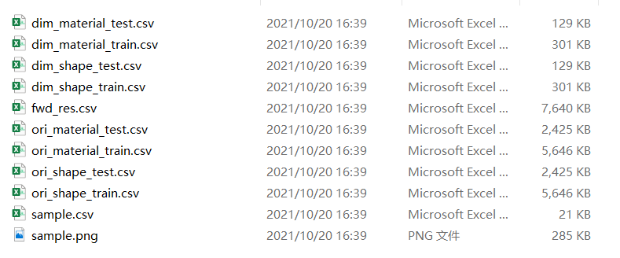
<p>
The 'fwd_res.csv' includes the observed data generated by TDEM forward modeling.<br/>
The 'sample.csv' includes one random sample data.<br/>
The 'ori_shape_train.csv' and 'ori_shape_test.csv' represent the original dataset for shape classification.<br/>
The 'ori_material_train.csv' and 'ori_material_test.csv' include the original dataset for material classification.<br/>
The 'dim_shape_train.csv' and 'dim_shape_test.csv' include the finale dataset after dimensionality reduction for shape classification.<br/>
The 'dim_material_train.csv' and 'dim_material_test.csv' include the finale dataset after dimensionality reduction for material classification.<br/>
The 'sample.png' is the display of the sample data in 'sample.csv'.<br/>
</p>
you can get the inversion results in the file path 'MICEMD\src\results\tdemResults\classify_res'
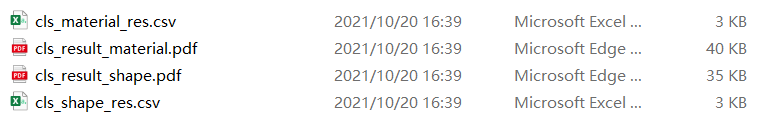<br/>
<p>
The 'cls_material_res.csv' includes the results of material classification.<br/> 
The 'cls_material_res.csv' includes the results of material classification.<br/> 
The two files above include the true label, predicted label and the accuracy of the classification.<br/> 
The 'cls_result_material.pdf' includes the confusion matrix of the material classification results.<br/> 
The 'cls_result_shape.pdf' includes the confusion matrix of the shape classification results.<br/> 
</p>
</div>


</div>
<div class="section" id="indices-and-tables">
<h1>Indices and tables<a class="headerlink" href="#indices-and-tables" title="Permalink to this headline">¶</a></h1>

<ul class="simple">
<li><p><a class="reference internal" href="genindex.html"><span class="std std-ref">Index</span></a></p></li>
<li><p><a class="reference internal" href="py-modindex.html"><span class="std std-ref">Module Index</span></a></p></li>
<li><p><a class="reference internal" href="search.html"><span class="std std-ref">Search Page</span></a></p></li>
</ul>
</div>


           </div>
           
          </div>
          <footer>

  <hr/>

  <div role="contentinfo">
    <p>
        &#169; Copyright 2021, Shi Haodong, Liu Wen, Wang Zheng.

    </p>
  </div>
    
    
    
    Built with <a href="https://www.sphinx-doc.org/">Sphinx</a> using a
    
    <a href="https://github.com/readthedocs/sphinx_rtd_theme">theme</a>
    
    provided by <a href="https://readthedocs.org">Read the Docs</a>. 

</footer>
        </div>
      </div>

    </section>

  </div>
  

  <script type="text/javascript">
      jQuery(function () {
          SphinxRtdTheme.Navigation.enable(true);
      });
  </script>

  
  
    
   

</body>
</html>